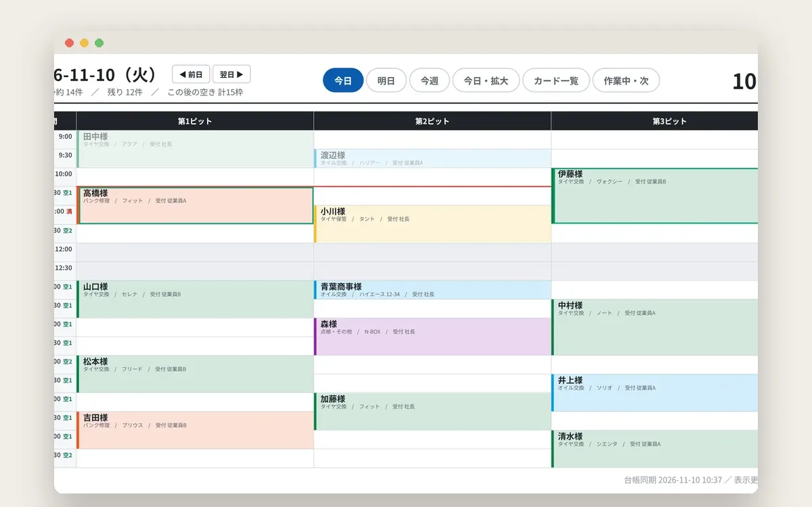
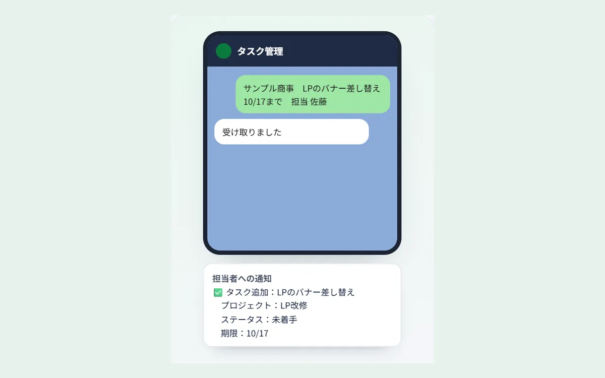
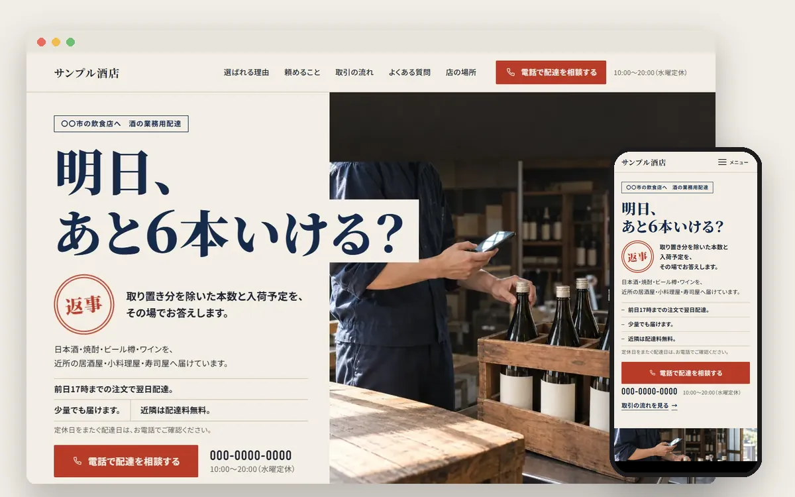
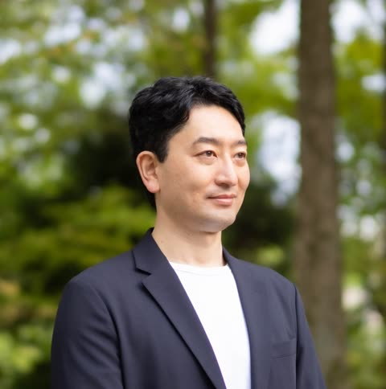

01 / 予約・受付
大会の受付から、
店舗の予約へ。
- 課題
- 電話・紙・メールで受付。予定の確認や台帳への転記が手間。
- 応用
- 空き枠の案内、Web予約、カレンダーと台帳の連携へ。
大会受付で運用実績店舗予約版は制作・検証中
AI活用・業務自動化・Web制作の作品集
連絡・集計・予約・見積から、記事制作やWebサイトまで。
現場の困りごとを聞き、使えるしくみをつくってきました。
下に流れているのは、すべて実際に作った画面です。
初回無料・「ページを見ました」の一言でOK
01 / SELECTED WORKS
予約・受付、チームの連絡、ホームページづくり。業務で使っているしくみと、実店舗への応用を紹介します。

01 / 予約・受付
大会受付で運用実績店舗予約版は制作・検証中

02 / 連絡・タスク管理
10名の担当者が日常利用

03 / ホームページづくり
作成から確認まで自動見本サイトや、このポートフォリオの確認にも使用
02 / SALES DEMOS
お客さまの前でそのまま見せられる営業デモです。画面はすべて架空のお店・架空の名前で動かしています。押すと詳細が開きます。
03 / ALL WORKS
業務自動化からWeb制作、個人開発まで。完成・稼働中のものから、制作・検証中のものまで紹介します。画面のない作品は、分野ごとのイメージ画像を表紙にしています。
業種は応用先の例です。各業種での導入実績を示すものではありません。
別のキーワードを試すか、絞り込み条件を減らしてください。
04 / ABOUT
業務を理解して、設計し、形にする。相談から制作まで、一人がつなぎます。

AIコンサル・講師 / Webディレクター
HITOSHI NEZU
元会計事務所勤務・法人経理担当。現場での業務経験をもとに、AI活用や自動化を支援しています。掲載している制作物は、ヒアリングから設計・実装まで自ら担当。LINEのご相談にも本人が直接お返事します。
LET’S MAKE IT WORK
うまく説明できなくても大丈夫です。今、時間がかかっている作業をお聞かせください。自動化できそうなことを、一緒に整理します。